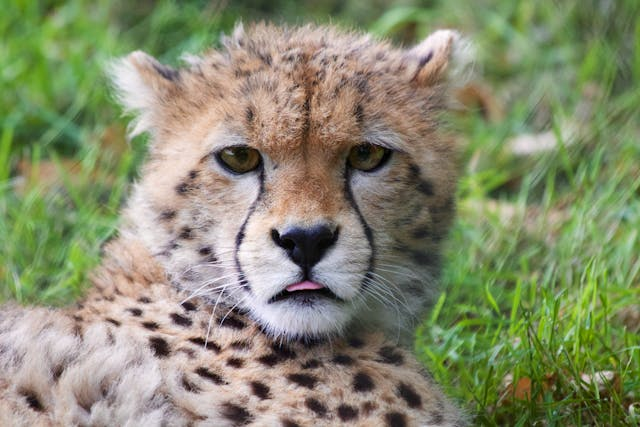
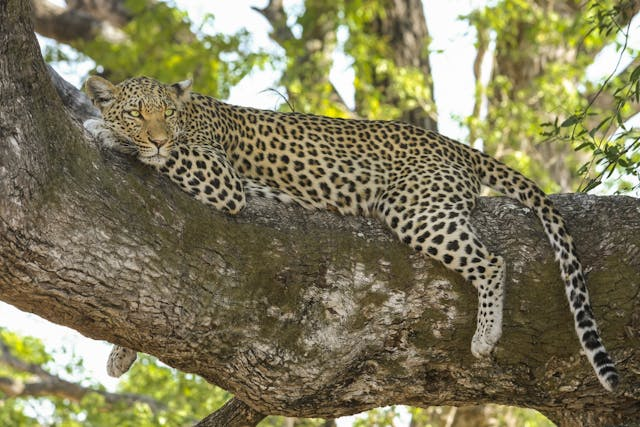
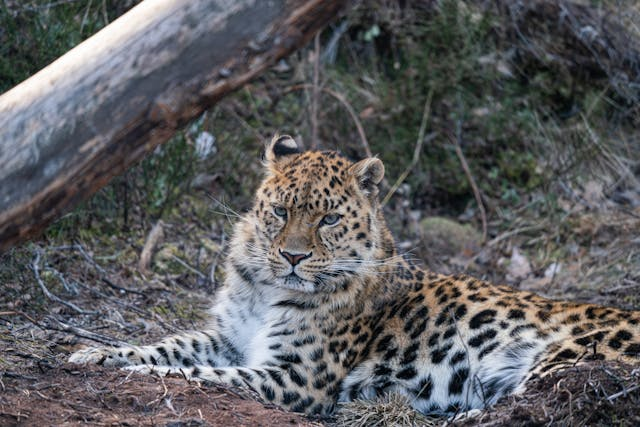

El leopardo (Panthera pardus) es un gran felino nativo de África, Asia y el sur de Europa. Es conocido por su pelaje manchado distintivo, que le proporciona un excelente camuflaje en su entorno natural.
Son solitarios y territoriales
Son carnivoros
Tercer felino más grande del mundo



CARACTERISTICAS
Son trepadores expertos y pueden subir a los árboles para descansar, vigilar a sus presas o escapar de los depredadores.
Su presencia ayuda a controlar las poblaciones de ungulados, lo que mantiene el equilibrio del ecosistema.